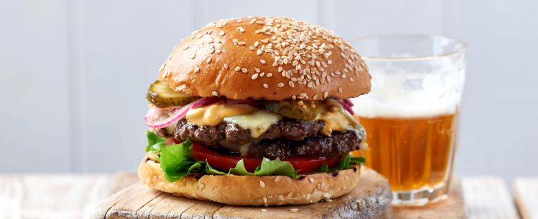

ingredients
- burger buns
- burgers
- tomatoes
- lettuce
- ketchup
- onions
- olive oil
Recipe
- slice the onions into rings
- slice the tomato into thin slices
- cut the lettuce so you have individual leave
- heat some olive oil in pan at a high heat
- put the burgers onto the pan and turn them every few minutes until cooked
- toast the burger buns
- put ketchup,onions,lettuce and tomato on the toasted buns
- put the burgers on the buns
- eat!
if you want a tasty meat free alternative, click here for a recipe.
